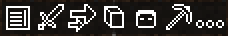

Seppuku Client is a free, lightweight, open-source Minecraft Forge client-side mod for Minecraft 1.12.2
Currently supports all Windows / Linux / MAC based operating systems that support Java 8
Seppuku Client is a free, lightweight, open-source Minecraft Forge client-side mod for Minecraft 1.12.2
Currently supports all Windows / Linux / MAC based operating systems that support Java 8
Place the "seppuku.jar" file into your mods folder.
Seppuku's default command prefix is the period character "."
Try entering a singleplayer session or multiplayer server and typing ".help" in chat.
To see a list of all the modules in Seppuku, enter the ".modules" command.
To edit an individual module, enter the module's name followed by the option to configure: ".freecam" or ".freecam speed 1"
Press ~ (GRAVE) or right shift (RSHIFT) to enable the GUI.
Inside the GUI/Hud Editor you will be greeted with a small tutorial and the Hub component.
The Hub component is a list of all the available components for you to use. Each component is enabled by left click; scroll with mouse wheel or using the scrollbar.
Drag hud components around freely, each one allows clamping onto screen corners and merging with other hud components to stack.
Middle clicking any component results in a white-border indicating it is now 'locked' or, in other words: entirely stopped from changing positions when resizing the screen.

The Tray component is centered at the bottom of the screen by default. It provides shortcuts to commonly used hud components.
Right click on an icon inside the tray to enable it's relevant component.